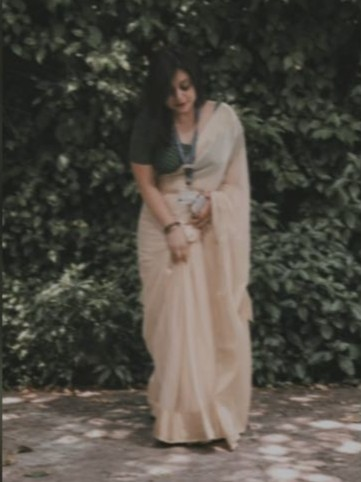

Attendance Ki Tension
That constant feeling of checking whether we had enough attendance.
Dear Namrata Ma’am ❤️
A little something for the teacher who made our journey a little more memorable.
From Nishant, your former COPA student
Dear Namrata Ma’am,
We may have completed our training, and everyone may have moved on to their own journeys, but some memories never really leave us.
You were not just our COPA teacher. You were someone who guided us, corrected us, taught us new things and reminded us to take our responsibilities seriously.
Maybe we didn’t realise the value of every little lesson at that time, but looking back, we genuinely appreciate everything.
This little website is simply our way of saying thank you.
Three days every week. Almost 40 kilometres.
Three days every week, travelling almost 40 kilometres just to attend ITI.
Auto → Metro → Bus → Finally, ITI!
Sometimes the journey itself felt like a complete adventure.
And after all that travelling, there was always one more challenge waiting… Being late and listening to Namrata Ma’am’s scolding! 😂
We travelled so far, fought traffic, changed transport and somehow still managed to arrive late.
At that time, getting scolded didn’t always feel funny. But today, those little moments have become some of the memories we can laugh about.
That constant feeling of checking whether we had enough attendance.
Trying to complete our work while managing everything else.
Being late and hearing Ma’am remind us about discipline. 😂
The ordinary classroom moments that became special memories over time.
Ma’am, honestly, at that time, sometimes your scolding felt a little difficult to handle.
But now we understand that discipline, punctuality and responsibility are important parts of learning.
We might forget some lessons from our notebooks, but the experiences and guidance we receive from teachers stay with us much longer.
Thank you for correcting us, guiding us and being a part of our learning journey.

Dear Namrata Ma’am,
Thank you for being a part of our journey.
Thank you for your patience, your guidance and even those little scoldings that we can laugh about today.
We may be pass-out students now, but that doesn’t mean we have forgotten the people who helped us along the way.
I hope you continue inspiring many more students, just as you have inspired us.
Wishing you happiness, good health and endless reasons to smile.
With lots of respect and gratitude,
Your COPA Student,
Nishant ❤️
Thank You, Namrata Ma’am.
– Nishant